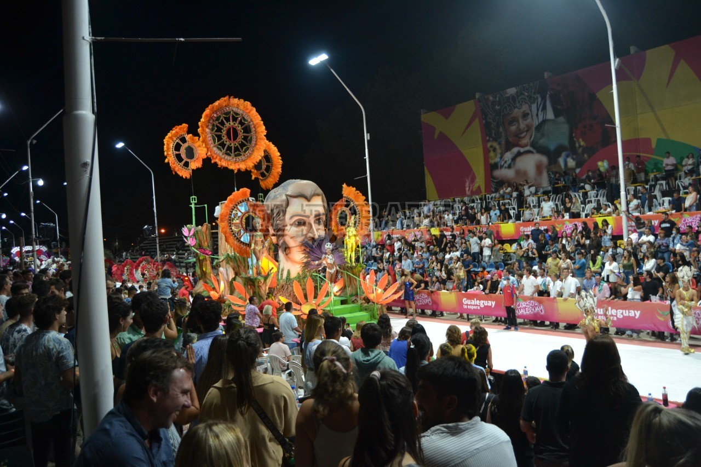
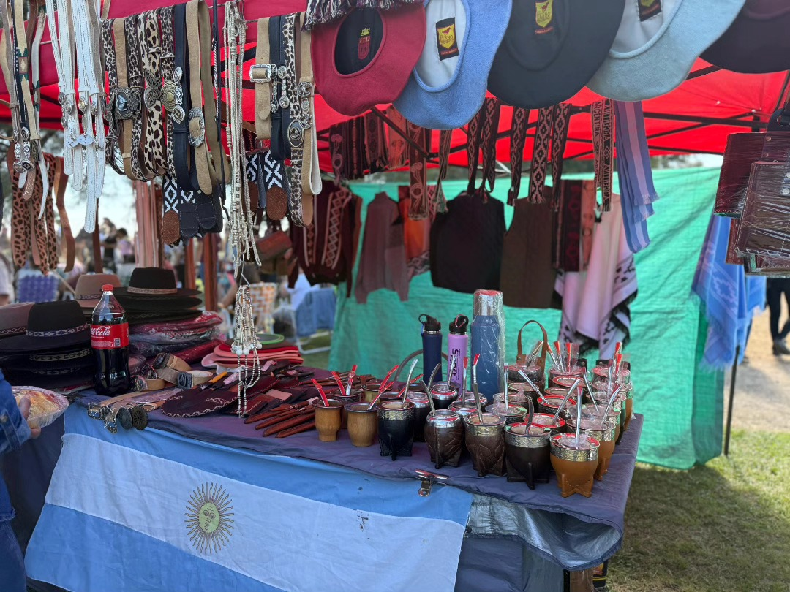
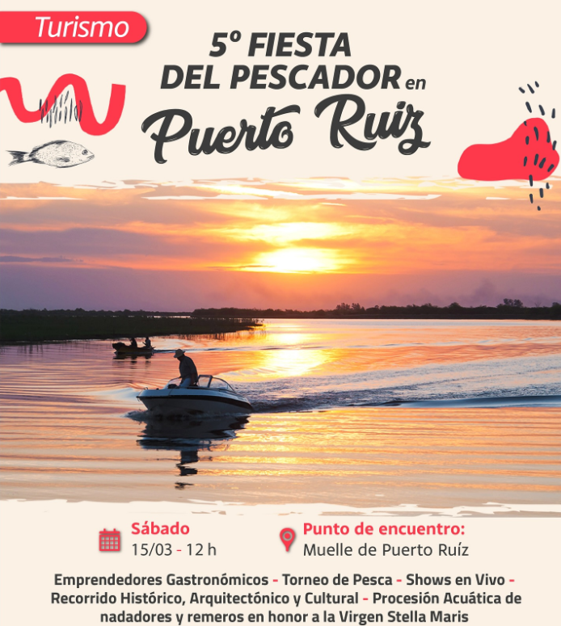

Carnavales de Gualeguay
Con carrozas, comparsas y música, los carnavales son el evento más esperado del año, llenando las calles de color y alegría.
Carnavales, ferias y celebraciones que llenan de vida la ciudad.
Gualeguay se destaca por sus carnavales, ferias artesanales y celebraciones religiosas que atraen visitantes de toda la región. Cada evento es una oportunidad para compartir la alegría y la identidad entrerriana.

Con carrozas, comparsas y música, los carnavales son el evento más esperado del año, llenando las calles de color y alegría.
Espacios donde artesanos locales exhiben y venden sus creaciones en cuero, madera y tejidos.

Celebraciones religiosas que reúnen a la comunidad en torno a la fe y las tradiciones.

Los ríos y arroyos de Gualeguay ofrecen un entorno ideal para la pesca deportiva y recreativa. Es común encontrar especies como el dorado, el pacú y el surubí, que atraen a pescadores de toda la región.
